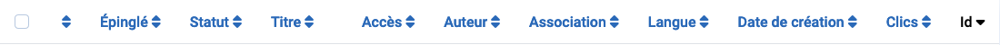
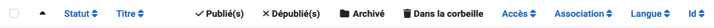
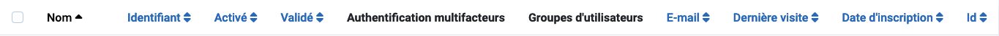

Les en-têtes de colonnes apparaissent dans les vues de liste pour indiquer la nature des informations dans cette colonne. Les en-têtes varient d'un composant à l'autre. De nombreux en-têtes de colonne peuvent être utilisés pour trier la liste sur cette colonne, mais ce n'est pas toujours le cas. Par exemple, dans les vues de liste de catégories, les quatre colonnes État ne sont pas utilisées pour le tri car tous les éléments de ces colonnes ont le même état.
Quelques exemples
Les en-têtes de colonne de la liste des articles

Les en-têtes de colonne de la liste des catégories

Les en-têtes de colonne de la liste des utilisateurs

Trier par colonne
Pour changer l'ordre de la liste, sélectionnez l'icône de tri de colonne. Dans une colonne qui n'est pas utilisée pour le tri, c'est un double chevron haut/bas (). Pour la colonne utilisée pour le tri, c'est soit un chevron vers le haut (), soit un chevron vers le bas () pour indiquer la direction actuelle du tri, croissant ou décroissant.
Quelques En-têtes Communs
Case à cocher Pour sélectionner tous les articles, cochez la case dans l'en-tête de la colonne.
Le bouton de la barre d'outils 'Actions' devient actif. Une action peut être appliquée aux
éléments visibles dans la page. Elle n'est pas appliquée aux éléments dans les pages suivantes
qui ne sont pas visibles.
Ordre Vous pouvez changer l'ordre d'un article dans une liste comme suit :
Dans les Options de filtrage, limitez la liste aux éléments à ordonner, par exemple
les éléments dans une Langue sélectionnée ou les éléments par un Auteur sélectionné.
Sélectionnez l'icône de tri dans l'en-tête de la première
colonne pour l'activer.
Sélectionnez l'une des icônes de l'ellipse verticale
qui apparaissent lorsque le tri est actif et faites-la glisser vers le haut ou le bas pour changer
la position de cette ligne dans la liste.
Titre ou Nom Le titre de l'élément est généralement un lien vers la
page Éditer de cet élément.
ID Un numéro d'identification unique pour cet article. Il ne peut pas être changé.